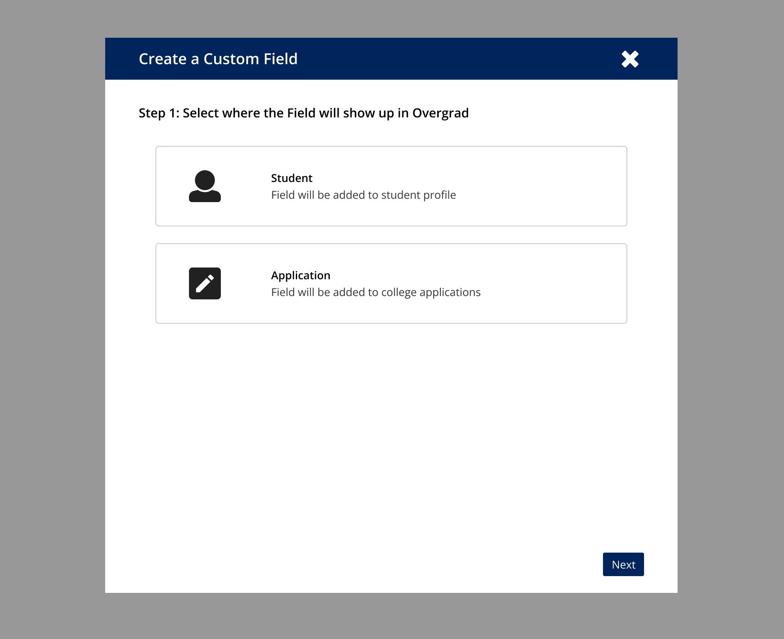
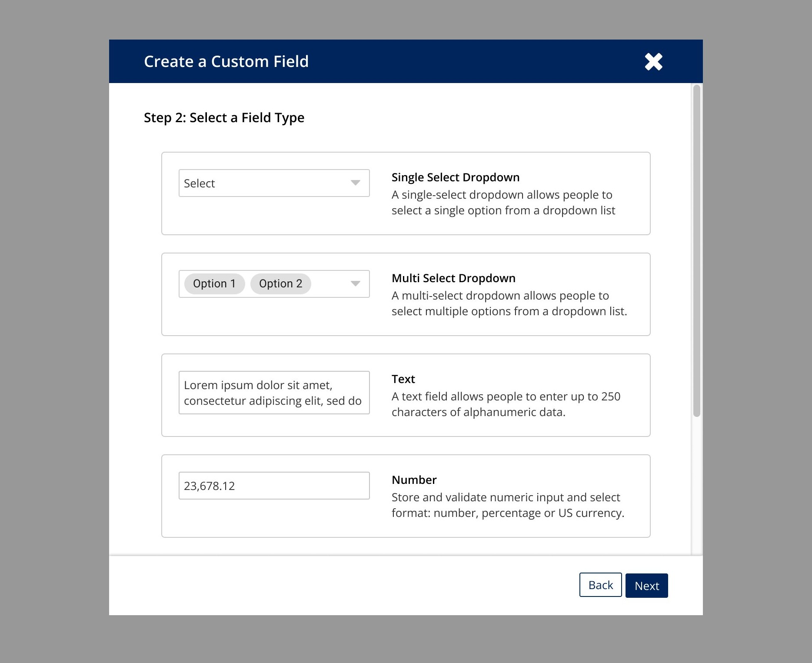
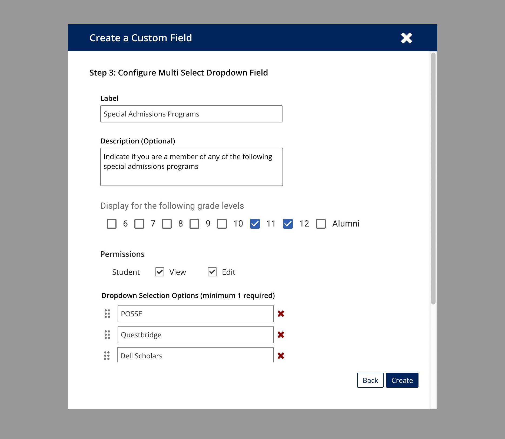
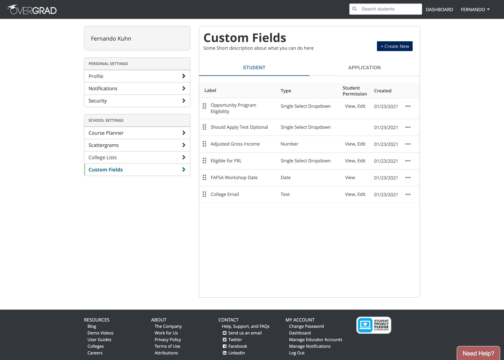

Bringing each school's spreadsheet into the product as typed, governed fields.
Every school's reality lived in a spreadsheet.
Each charter network tracked the things that mattered to them, and those things lived in organization-specific spreadsheets that sat completely outside the product. Counselors worked in two places at once: our software for the standard data, and their own sheets for everything that made their program theirs.
A guided flow that turns a column into a typed, governed field.
I owned the design and the product thinking here, working directly with one developer, which meant owning the data model as much as the interface: deciding how a free-form column becomes a typed, governed field the rest of the product can trust and report on. I shaped it into a short, guided flow, so adding a field felt as easy as adding a spreadsheet column, without the chaos.
- Define field types (text, number, select, date) so data stays clean and queryable.
- Give admins governance: where a field shows, who can see or edit it, what options are allowed.
- Keep creation low-friction, one decision per step.



Adoption that proved the model fit.
Schools moved their spreadsheets into the product quickly, a sign the data model matched how they actually work. And because every field was now typed and governed, schools could report on, filter, and segment by their own data right inside the product, the one thing a spreadsheet sitting outside it could never do.
